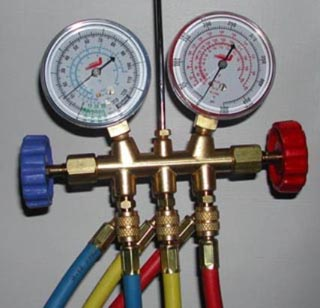

Как правильно и чем заправить холодильник?

Холодильники, как и любая бытовая техника, имеет свойство ломаться. Часто изнашиваются трубки в результате вибрации, что приводит к утечке фреона и последующему размораживанию. Вместо того чтобы покупать новый холодильник, порой выгоднее отремонтировать и заправить фреоном старый советский, который сможет прослужить еще десятки лет!Современные холодильники не требуют дозаправки хладагента. В большинстве случаев, если холодильник перестает охлаждать или есть признаки утечки хладагента, необходимо обратиться к квалифицированному специалисту.
Самостоятельная заправка хладагента опасна!
Без соответствующих знаний и оборудования это может привести к повреждению устройства и ухудшению его работы.
Важно помнить:
— Обращайтесь только к сертифицированным специалистам.
— Регулярное и своевременное обслуживание помогут избежать необходимости ремонта.Если у вас есть конкретная проблема с холодильником, пишите,звоните и я постараюсь дать более точные рекомендации.
Николай Шут, мастер по ремонту с 40-летним опытом
Первым делом нужно обнаружить утечку фреона. Данный дефект обнаруживается достаточно просто – под компрессором обнаруживается небольшая лужица фреонового масла. Фреон при утечке испаряется, а масло, синтетическое или минеральное остается внизу. И далее визуально обнаруживается трещина не медной трубке. Если процесс коррозии пошел далеко и испаритель, изготовленный из алюминия, потерял герметичность, то утечки визуальным способом обнаружить практически невозможно. В данном случае используется водяная ванна, куда помещается вся система, продуваемая сжатым воздухом. Для этих целей мастера используют те же компрессоры, установленные в холодильнике.
Как только трещина обнаруживается, то она с помощью ацетиленовой газосварки заваривается прямо на месте. В случае с алюминиевыми трубками ситуация намного серьезнее – приходится задействовать аргоновую сварку, которая имеется только в цеху. Стоимость ремонта в последнем случае резко возрастает!
Важно определиться с видом фреона. Для классических советских холодильников, имеющих среднетемпературные компрессоры, имеет смысл заливать классические фреоны марки R12 вместе с минеральным маслом, что позволит замораживать продукты в течение нескольких недель под температурой до минус 12 градусов Цельсия. Но если важна глубокая заморозка (до минус 18 градусов), разумно заливать внутрь системы фреон в виде изобутана (R600a), который также обеспечивает минимальную нагрузку на всю холодильную систему, что позволяет последней даже при частой работе, прослужить куда дольше!
Недостаток изобутана имеется – это необходимость точного взвешивания, поскольку избыток или недостаток изобутана приведет к резкому падению холодильной мощности! Именно поэтому мастера, когда используют изобутан, обязательно используют электронные весы.
Перед окончанием работы мастер обязательно устанавливает электронный термометр внутрь морозильной камеры. Как только температура быстро достигнет штатного уровня, и термостат даст команду на отключение компрессора, ремонт всего холодильника будет считаться законченным. Важно заметить в последнем случае, что гарантия мастерами дается исключительно на собственную работу. Если «железо» выйдет из строя, то следующий ремонт и заправку холодильника фреоном придется проводить по отдельному тарифу.